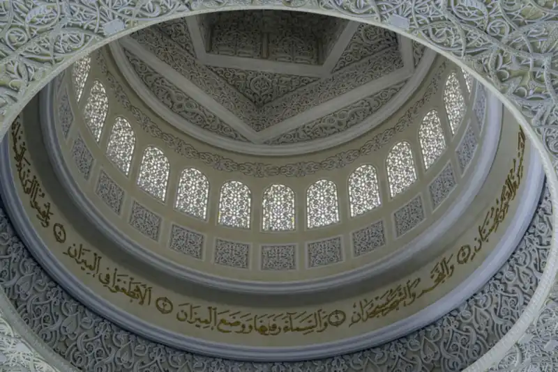
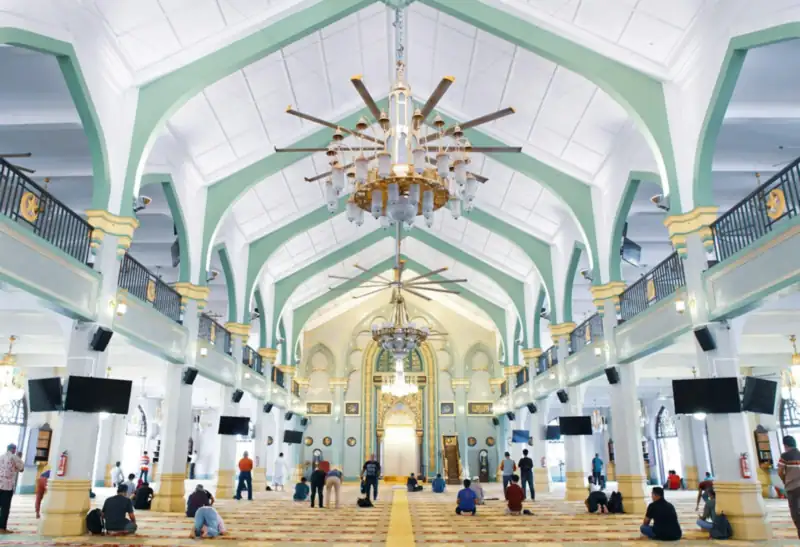
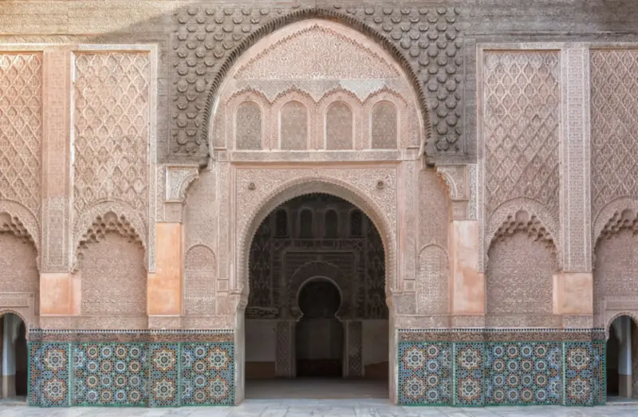

About the masjid
A house of Allah in Hoppers Crossing, serving the Muslims of Melbourne’s west since 2006 — and named in honour of Maryam (peace be upon her), whom Allah honoured in the Qur’an.
Photo: Nick Fewings / Unsplash
Who we are
A house of Allah, first and always.
Masjid Maryam exists to serve the Muslim community of Melbourne’s west — in worship, and in all the life-events in between.
-
The five daily prayers & Jumu’ah
Prayed in congregation at the masjid.
-
The two Eids
Eid prayers, here at the masjid.
-
Every stage of life
From the adhan whispered in a newborn’s ear to the janazah prayer that accompanies us home.
-
A dedicated women’s prayer section
Part of the masjid.
-
Our doors are open
If you are not Muslim and want to see inside a mosque, ask a question about Islam, or arrange a school or community group visit, you are warmly welcome — start with our visitors & questions page.

Curious about Islam? Our da’wah partner IntroToIslam offers free, self-paced online courses — and weekly classes in person and on Zoom.
Get to know us
Our name, our people, our story

Our name Why “Virgin Mary”? Maryam (peace be upon her) is the only woman named in the Qur’an, and its nineteenth surah carries her name. Why our masjid does too. Read more
Our people Our team The imam, staff and volunteers who lead prayer, teach, and serve the congregation. Meet the team
Our journey Our history Serving Hoppers Crossing and the City of Wyndham since 2006. Read our storyJoin us
Pray with us this Friday.
Jumu’ah is held three times every Friday — 12:15 PM, 1:15 PM and 2:15 PM — with khutbahs in Arabic and English, at 143 Hogans Rd, Hoppers Crossing.